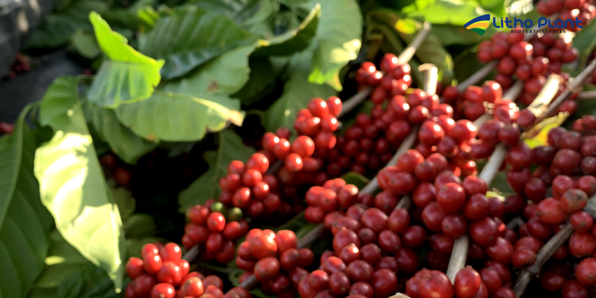
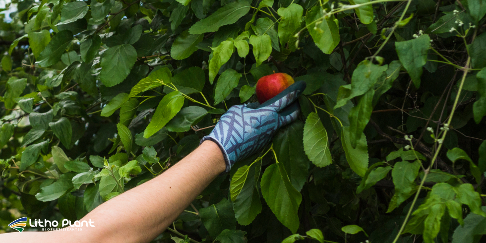

Conheça o Coffee HF – O Fertilizante Ideal para Suas Culturas
 Coffee HF é um aliado estratégico no manejo nutricional de lavouras de café e outras culturas exigentes.
Coffee HF é um aliado estratégico no manejo nutricional de lavouras de café e outras culturas exigentes.
A Litho Plant, uma renomada indústria de biofertilizantes em Linhares, desenvolve soluções inovadoras para o cultivo de café e outras culturas.
Um de seus produtos de destaque é o Coffee HF, um fertilizante mineral misto projetado para melhorar a saúde e a produtividade das plantas.
O Coffee HF é especialmente eficaz quando utilizado em conjunto com biofertilizantes e outras práticas agrícolas modernas.
Se você está buscando maneiras de otimizar o cultivo, continue lendo para descobrir como o Coffee HF pode ser o aliado perfeito para sua produção agrícola.
A importância da nutrição adequada no cultivo
O uso de biofertilizantes tem se mostrado uma prática eficaz para melhorar a saúde do solo e promover o crescimento vigoroso das plantas.
No entanto, para alcançar resultados ainda melhores, é importante combinar esses biofertilizantes com fertilizantes minerais de alta qualidade, como o Coffee HF.
O Coffee HF foi desenvolvido pela indústria de biofertilizantes em Linhares para atender às necessidades específicas de diversas culturas.
Ele contém um mix inteligente de nutrientes quelatados e aminoácidos que são rapidamente absorvidos pelas plantas, promovendo crescimento saudável e aumentando a resistência a condições adversas.
Benefícios do Coffee HF no cultivo de café
O Coffee HF oferece uma série de benefícios para o cultivo de café, tornando-se uma escolha ideal para produtores que buscam maximizar produtividade e qualidade.
1. Nutrientes quelatados com maior eficiência
Os nutrientes quelatados presentes no Coffee HF são mais facilmente absorvidos pelas plantas, garantindo maior eficiência no aproveitamento da adubação.
Isso é particularmente importante no cultivo de café, onde a disponibilidade de micronutrientes influencia diretamente a qualidade dos grãos.
Com o Coffee HF, os produtores podem assegurar que as plantas recebam os nutrientes necessários para se desenvolverem fortes e saudáveis.
2. Mix inteligente de aminoácidos e micronutrientes
O Coffee HF combina aminoácidos e micronutrientes essenciais para o cultivo de café e outras culturas.
Esse mix inteligente ajuda a corrigir deficiências nutricionais e melhora o metabolismo das plantas, resultando em crescimento mais vigoroso e melhor formação dos grãos.
Estudos indicam que fertilizantes contendo aminoácidos contribuem para aumentar a resistência das plantas ao estresse e melhorar a qualidade final da colheita.
3. Condicionamento e resistência ao estresse
Outro benefício importante do Coffee HF é sua capacidade de condicionar as plantas para suportar condições adversas, como seca ou altas temperaturas.
A aplicação do fertilizante ajuda a fortalecer as defesas naturais das plantas, permitindo que continuem a crescer e produzir mesmo em situações de estresse.
Isso é crucial para o cultivo de café, especialmente em regiões com maior variabilidade climática.
4. Aumento da produtividade
O uso do Coffee HF no cultivo de café tem demonstrado aumento significativo na produtividade das plantas.
Essa resposta positiva está ligada à combinação de nutrientes e bioestimulantes que favorecem crescimento mais rápido e equilibrado.
Com Coffee HF, os produtores podem esperar maior produção de grãos de alta qualidade, resultando em colheitas mais abundantes e rentáveis.
5. Aplicação versátil
O Coffee HF pode ser aplicado de várias maneiras, incluindo adubação foliar, fertirrigação e aplicação no solo.
Essa versatilidade permite ajustar a estratégia de aplicação conforme as necessidades das plantas e as condições de cultivo.
Além disso, a facilidade de uso torna o Coffee HF uma escolha prática e eficiente para produtores de café e de outras culturas.

Coffee HF apoia plantas mais equilibradas, com melhor carga de frutos e maior potencial produtivo.A eficiência dos biofertilizantes no cultivo de outras culturas
A combinação de biofertilizantes com fertilizantes minerais, como o Coffee HF, tem se mostrado uma estratégia eficaz no cultivo de café e de outras culturas.
Os biofertilizantes ajudam a melhorar a saúde do solo, promovendo o crescimento de microrganismos benéficos que facilitam a absorção de nutrientes.
Quando utilizados em conjunto com o Coffee HF, esses biofertilizantes potencializam a nutrição mineral, resultando em plantas mais fortes e produtivas.
Estudos realizados no Brasil mostram que a aplicação de biofertilizantes em lavouras pode aumentar significativamente produtividade e qualidade dos grãos, além de contribuir para maior sustentabilidade do cultivo.
A indústria de biofertilizantes em Linhares tem papel importante no desenvolvimento de produtos que atendem a essas demandas, oferecendo soluções eficazes e sustentáveis aos agricultores.

Resultados de campo indicam ganhos em produtividade e qualidade quando Coffee HF é integrado a programas com biofertilizantes.Por que escolher o Coffee HF
Existem muitas razões para o Coffee HF se destacar como fertilizante ideal em sistemas de alta performance.
Em um cenário em que qualidade e produtividade são decisivas, a escolha dos insumos certos faz toda a diferença.
O Coffee HF combina o melhor dos fertilizantes minerais e dos biofertilizantes, oferecendo solução completa para a nutrição das plantas.
Ao reunir vantagens dos dois tipos de insumos, o produto proporciona nutrição balanceada em todas as fases do desenvolvimento, do enraizamento à colheita.
A combinação de nutrientes quelatados com bioestimulantes garante acesso rápido e eficiente aos nutrientes, promovendo crescimento vigoroso e maior resistência a condições adversas.
Além disso, o Coffee HF foi formulado com base em pesquisas e em anos de experiência em campo, sendo desenhado para atender desafios como deficiências nutricionais, estresse ambiental e baixa produtividade.
A indústria de biofertilizantes em Linhares investe continuamente em pesquisa e desenvolvimento para entregar produtos que melhorem a saúde das plantas e maximizem o rendimento das colheitas.
Estudos de campo e avaliações técnicas apontam aumentos consistentes na produtividade e na qualidade dos grãos com o uso do Coffee HF.
A Litho Plant também oferece suporte técnico e orientação contínua para produtores que utilizam o Coffee HF, ajudando a definir as melhores práticas de aplicação para cada realidade de lavoura.
Esse acompanhamento inclui recomendações de dose, frequência e combinações com outros biofertilizantes para otimizar os resultados.
Outro ponto importante é que o Coffee HF contribui para a saúde das plantas e para a qualidade do solo, favorecendo sistemas produtivos mais resilientes frente aos desafios climáticos.
Integrado a um manejo nutricional bem planejado, o produto ajuda a reduzir a dependência exclusiva de fertilizantes químicos convencionais, contribuindo para práticas mais sustentáveis.
Com Coffee HF, é possível obter lavouras mais produtivas, com grãos de alta qualidade e alinhadas às exigências de um mercado cada vez mais competitivo.
Conclusão
O Coffee HF é mais do que um fertilizante: é uma ferramenta estratégica para produtores que desejam elevar o patamar do cultivo de café e de outras culturas.
Com sua combinação de nutrientes quelatados, aminoácidos e bioestimulantes, o produto oferece benefícios que vão do aumento da produtividade ao fortalecimento da resistência ao estresse.
Desenvolvido pela indústria de biofertilizantes em Linhares, o Coffee HF é uma escolha sólida para quem busca resultados consistentes no campo.
Se você quer saber mais sobre o Coffee HF e como ele pode beneficiar sua produção, entre em contato com a Litho Plant. A equipe está preparada para indicar o melhor plano de nutrição para sua lavoura.
Solicite um orçamento e descubra como o Coffee HF pode transformar o cultivo de café e de outras culturas, levando sua produção a um novo nível de qualidade.